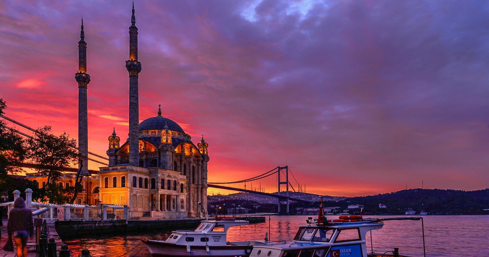

Istanbul is the only city in the world that spans two continents. Straddling Europe and Asia across the Bosphorus strait, it carries within it the accumulated weight of empires — Byzantine, Roman, Ottoman — each leaving monuments, traditions, and flavors that persist to this day.
Istanbul is a city of extraordinary layering. History is not preserved behind glass here — it is lived in, prayed in, and walked through daily.
Istanbul's skyline is one of the most recognizable in the world. Its domes and minarets rise above a dense urban fabric that has been continuously inhabited for over two thousand years.
Istanbul's neighborhoods shift dramatically in character, reflecting centuries of diverse inhabitants and different waves of urban development.
Istanbul has a rich artistic tradition shaped by its position at the crossroads of cultures. Calligraphy, miniature painting, and ceramic arts flourished under Ottoman patronage. Today the city has a dynamic contemporary arts scene, with major museums, galleries, and the internationally recognized Istanbul Biennial.
Food in Istanbul is inseparable from its social life. The city runs on tea, simit, and conversation. Street food is central — roasted chestnuts, stuffed mussels, and grilled corn are sold at every corner. The fish restaurants along the Bosphorus are institutions. Breakfast in Istanbul, with its spread of cheeses, olives, eggs, and breads, is a ritual not to be missed.
Istanbul moves at a pace that is neither rushed nor slow. The call to prayer punctuates the day across the city. The Bosphorus is always nearby — visible from hilltops, crossed by ferries, and present in the air. The city is noisy, generous, and impossible to reduce to a single impression.
Istanbul rewards those who slow down. Its history is vast, its energy is constant, and its hospitality is genuine. It is a city that has stood at the center of the world for a very long time, and still feels like it.